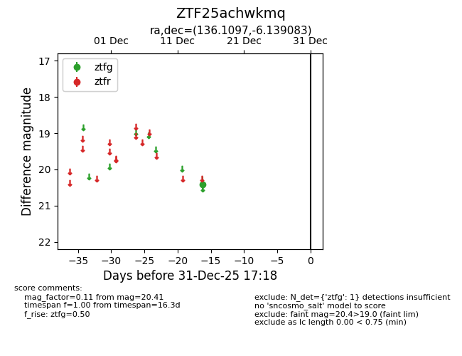
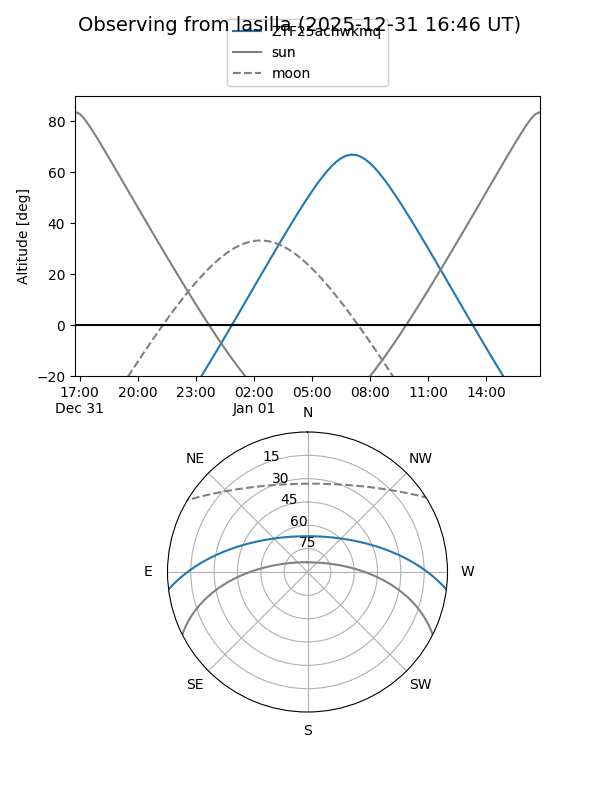
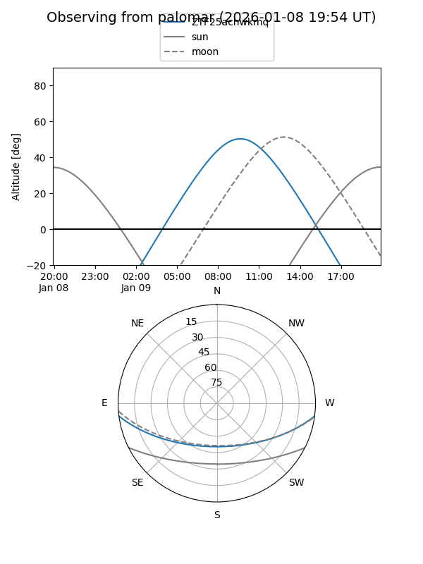

ZTF25achwkmq
Target ZTF25achwkmq at 2025-12-31 16:59
Aliases and brokers:
FINK:
Lasair:
ALeRCE:
alt names
ZTF25achwkmq (ztf,fink_ztf)
Coordinates:
equatorial (ra, dec) = 136.1097,-6.13908
equatorial (HMS+DMS) = 09:04:26.33,-06:08:20.70
galactic (l, b) = (235.3933,+25.87535)
Flags:
Photometry:
last ztfg=20.41
1 ztfg detections
Lightcurve

Visibility


Additional plots